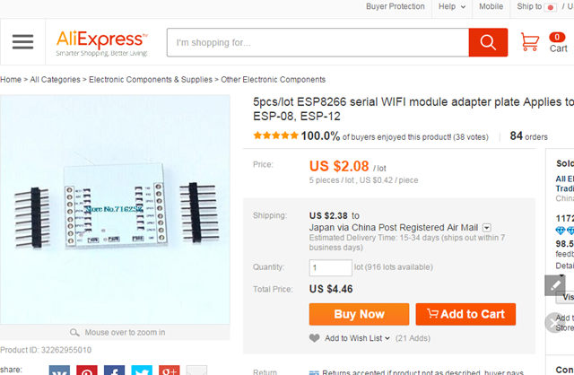

さて、前回まででプロッターとしての機械的な部分は完成したのであとは、それを送り込むソフトウェア側の問題です。
試してみて、堂々巡りになってきているのでとりあえず情報を整理してみます。簡単に言えば、はまってます。
全体の仕組みとしては、以下のようです。
・Arduino 側でG-CODE を受けて解釈し、モータードライバーへ信号を出す仕組み。
GRBL
https://github.com/grbl/grbl/wiki/Compiling-Grbl
HexUploader
https://github.com/paulkaplan/HexUploader/wiki/Using-HexUploader
http://paulkaplan.me/HexUploader/
・PCからG-Code をUSB シリアル経由で流し込む仕組み
いろいろあります。osx で対象となるものは、以下の２つが見つかりました。
Universal-G-Code-Sender
https://github.com/winder/Universal-G-Code-Sender/downloads
https://github.com/winder/Universal-G-Code-Sender
Grbl Controller
http://zapmaker.grblcontroller.s3-website-us-west-2.amazonaws.com/
・G-CODE を作成
こちらも、いろいろとあるようです。３次元加工ができるものから、プロッター用途までさまざま。フリーで使えるものを対象に選んでみました。
InkScape + Inkscape Gcodetools plug-in
https://inkscape.org/en/download/
http://www.cnc-club.ru/forum/viewtopic.php?t=35
or
InkScape + Big Blue Saw DXF Output
PyCAMでG-Code を生成 （以下に、Homebrew での手順）
http://www.shapeoko.com/wiki/index.php/PyCAM-MacOS
or
WEB Services の Easel
http://app.easel.com/
とりあえず、Arduino 側へgrblのバイナリを転送します。
以下からダウンロード。HexUploader を使いアップロードします。
https://github.com/grbl/grbl
osx だと、HexUploader が使えるらしいんですがアップロード方法がよくわからず、結局VirtualBox のWIN7で Xloader を使いアップロードしました。
http://xloader.russemotto.com/
VirtualBoxだと、一回USBをはずしてつければ認識するはず。ドライバーは以下を入れました。

http://wch.cn/download/CH341SER_ZIP.html
以下のように、COM4 で認識したのでXloader のポートを合わせて、Device にはNano を選択。

ちょっと、ここらで言葉の整理を。調べ物をしていると、CAD と CAM という言葉が出てきます。
CAD はデザインする computer aided design でなじみがありますが、CAM とはCNC マシンに渡すデータを作成する処理とのこと。つまり、CAM とはG-Code を作成する処理のことと理解しました。

これがスタンダードなワークフロー。そして、これをすっ飛ばすWEBサービスがEaselというのがあるようです。

Inventables 社のアカウントを作ります。
https://www.inventables.com/sessions/new
ログインして、図を書きMachine から各種設定をしてAdvanced からG-Code が出るようです。
ちょっとよくわかりませんが、とりあえずG-Code を作成してみます。
Generate g-codeで3D画面に出ます。Export してファイルに出します。

このファイルは以下のよう。
G21
G90
G1 Z2.000 F228.6
M3 S18000
G1 Z2.000 F228.6
G0 X14.521 Y14.973
G1 Z-0.051 F228.6
G1 X14.521 Y14.973 F635.0
G1 X21.512 Y13.953 F635.0
G1 X16.456 Y9.024 F635.0
G1 X17.646 Y2.066 F635.0
G1 X11.397 Y5.350 F635.0
G1 X5.151 Y2.066 F635.0
G1 X6.341 Y9.027 F635.0
G1 X1.284 Y13.953 F635.0
G1 X8.276 Y14.973 F635.0
G1 X11.400 Y21.300 F635.0
G1 X14.521 Y14.973 F635.0
G1 Z2.000 F228.6
M5
G0 X0.000 Y0.000
で、これをGrbl Controller 3.6.1 から読み込んでみます。これは以下にユーザがビルドしたものがあります。
https://github.com/zapmaker/GrblHoming/issues/86
で、読み込んだ状態。
おおおお～。
設定は以下のパラメーターをCommand のところから、流し込みました。
$0 = 60
$1 = 60
$2 = 50
$3 = 100
$4 = 220.000
$5 = 220.000
$6 = 28
$7 = 50
$8 = 25.000
$9 = 0.050
$10 = 0.100
$11 = 25
$12 = 3
$13 = 0
$14 = 1
$15 = 0
$16 = 0
$17 = 0
$18 = 0
$19 = 220.000
$20 = 220.000
$21 = 100
$22 = 1.000
このパラメータの意味は、以下のようです。よくわかりませんので、今のところ、適当に合わせます。
$0 = (steps/mm x)
$1 = (steps/mm y)
$2 = (steps/mm z)
$3 = (step pulse, usec)
$4 = (default feed, mm/min)
$5 = (default seek, mm/min)
$6 = (step port invert mask, int:00011100)
$7 = (step idle delay, msec)
$8 = (acceleration, mm/sec^2)
$9 = (junction deviation, mm)
$10 = (arc, mm/segment)
$11 = (n-arc correction, int)
$12 = (n-decimals, int)
$13 = (report inches, bool)
$14 = (auto start, bool)
$15 = (invert step enable, bool)
$16 = (hard limits, bool)
$17 = (homing cycle, bool)
$18 = (homing dir invert mask, int:00000000)
$19 = (homing feed, mm/min)
$20 = (homing seek, mm/min)
$21 = (homing debounce, msec)
$22 = (homing pull-off, mm)
ゼロポイントを合わせるやりかたがいまいちよくわかりませんが、これで動かしてみます。
※映像準備中
とりあえず、Z軸が逆に動いてしまう幹事ですが、動いているようです。
ふぅ。なんとかここまでたどり着きました。まだ課題があります。
・Z軸の動作を逆にしたい
・ゼロポイントを合わせる方法
・XYテーブルの移動量の設定
・速く動作させるための設定
なかなか、奥が深いですね。まさか、ジャンクはFDDでここまで勉強できるとは。